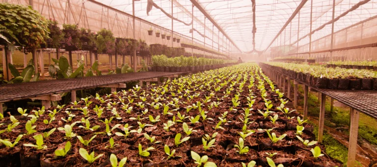

Viveiro
Viveiros de Camaçari
Espaços de cultivo onde você pode procurar mudas ornamentais, frutíferas e espécies nativas.
Encontrar no mapa ↗Cada território guarda uma riqueza de plantas, histórias e saberes. Explore lugares de Camaçari e região que aproximam as pessoas da natureza.
Descubra lugares para conhecer, cultivar e valorizar as plantas.
Lugares para conhecer e encontrar novas plantas.

Espaços de cultivo onde você pode procurar mudas ornamentais, frutíferas e espécies nativas.
Encontrar no mapa ↗Conheça a riqueza natural da região.

Conheça espaços naturais e observe a diversidade de plantas e ecossistemas de Camaçari e região.
Encontrar no mapa ↗Lugares para encontrar produtos de origem vegetal.

Encontre estabelecimentos que comercializam ervas, sementes, temperos e outros produtos vegetais.
Encontrar no mapa ↗“Conhecer o território é também aprender a cuidar da vida.”
SEMEIA+ • GUIA ETNOBOTÂNICO